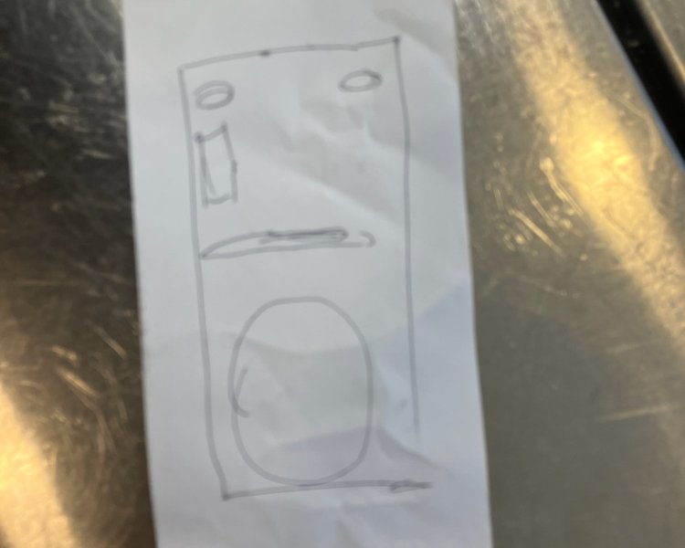

Sex Van Floor Plan (SVFP) is a riot-grrrl inspired band formed in 2024 in State College, Pennsylvania. First established as a trio by young folx Rho, Chuck, and Ellis (on guitar, lead vocals, and bass, respectively), the group recruited Jake as a drummer in early 2025. The band went on to play 16 shows in the state over the course of a year, releasing a single in 2025 and an EP in 2026. Additionally, they were featured in a documentary short that highlights Ellis's vision and perspective for starting the band. Original members currently reside in Pittsburgh and St. Louis, putting the group on hiatus.
The prehistory of the band dates back to Rho and Chuck as classmates during their secondary-education years in State College, with Ellis growing up a few hours away, in Pittsburgh. Jake, meanwhile, was a grad student who transferred from Iowa to Penn State during this time: he had played the drums in bands such as DDT LLC and dino spumoni in Iowa City, and later on, Boston-based Lilith as a fill-in. Chuck and Rho would play music together over the years; Rho would also go on to start Homeless On Mars with another friend, Mags. Ellis was classically trained on cello and would often experiment with making songs on GarageBand, as one does who has an internal drive to someday start a band. While each future SVFP member had their own musical influences, one that they all had in common was No Doubt. Chuck, Rho, and Ellis were also heavily inspired by riot-grrrl acts such as Bikini Kill and Le Tigre.

In college at Penn State, Chuck and Rho moved into a house together around the time they were considering dropping out. They would play music together like old times, with Rho backing up Chuck's lead vocals on guitar and backing vocals as a duo. The two knew Ellis through a mutual friend and from the broader college social scene. This led to Ellis witnessing Rho and Chuck play some cover songs as well as an early version of "(i changed my) Availability (4 u)", which would later be on the 2026 EP. With this seed of inspiration, Ellis proceeded to learn the electric bass and the three soon decided they'd start a band together. The SVFP name arose from an inside joke and it soon became official, with the trio having their first live performance at their friend Hunter's birthday party in the autumn of 2024. Here they premiered their own "Availability" along with cover adaptations of "Boys Don't Cry" by The Cure and "It's Only Sex" by Car Seat Headrest.
Momentum from their first performance led to a burst of proliferation for the band's songwriting, with Chuck having written "Not Linear" earlier in the year. Rho wrote "(iou a pack of) American Spirits" in the weeks following the birthday-party gig, posting an acoustic demo version of the song on TikTok on November 2nd. In the same month came "untitled dysphoria song" or "U.D.S.", written by Ellis while living in the nearby town of Bellefonte. Ellis next penned what would go on to be the band's most iconic lyric: Make more money, go out for the weekend. I should stop but I like the attention. This chant bookends crowd favorite "pay2play", which Ellis would finish authoring by the end of 2024.
Chuck, Rho, and Ellis were working at The State Theatre during an evening screening of David Lynch's Eraserhead, with old ticket stubs and Letterboxd logs indicating November 15th. That night, in walks Jake for the 11 PM show with his friend E, who the three know as a work supervisor. These two, it turns out, had been discussing the idea of using the studio at Irvin House to help local songwriters record music. E had also been hinting to Chuck, Rho, and Ellis that he might have found a drummer for their band. Jake proceeds to walk up to the Theatre's bar to order a beer from none other than Ellis, who was tasked to check his Pennsylvania ID and then recognized the name on the card. "Hey, you're friends with E and you're into music stuff, right?", Ellis said with Rho close behind in the bar area. Through hellos and brief introductions, they spoke of their singer friend Chuck who was also on shift somewhere else in the building. After the movie, the five planned to get together after Thanksgiving to workshop some potential music production.
The first group session at Irvin House in December 2024 saw the original trio sharing their song ideas while Jake and E provided drum support. While still getting to know one another, Jake was inspired by their song ideas; they reminded him of some of his friends' music projects from his college days at UMass, as well as the Dog Mansion scene in Iowa City. Under the impression that Chuck was intending to perform both drum and vocal duties, he soon offered to help SVFP with recording an eventual EP to be released on Bandcamp, or something similar. Little did Jake know, however, that the band was keeping an eye out for a drummer as a fourth member. The group continued to get together in early 2025, learning "Watermelon" from Adam Carter Rehmeier's Dinner in America as a cover song. While E and Jake both took turns on drums for these initial workshopping sessions, Jake was ultimately settled as the main drummer once the group was invited to play a local show that summer.
SVFP rehearsed throughout the spring of 2025, as they continued to develop "Availability", "American Spirits", "U.D.S.", "Not Linear", and "pay2play". In addition to "Watermelon", the group learned "I F*cked Yr Mom" by Sorry Mom and "Wet" by Dazey and the Scouts as cover songs. Chuck was also writing "Scorched Earth" in May and June, though the band would not end up playing this song live. The group also had their first (self) photo shoot at Irvin House around this time, using a colored light source, a diffraction grating, and some pizza. In these weeks leading up to their first show as a quartet, the original three inadvertently learned that Jake had a doctorate; this started the playful tradition of using "Doc McCoy" during live-set band member introductions. This debut was on June 14th, with emo rockers Hole Milk and Windowsilk, also from central Pennsylvania. Unfortunately, the bubblegrungey Candy Ambulance from upstate New York had to cancel their set. Organized by Dance Off Productions, the event took place at a house venue in State College then known as the The Spice Rack. In fact, this very same location would be taken over by Rho, Chuck, and Ellis later that summer and renamed to The Slop House. The show was advertised as being sober on account of Windowsilk members and others in attendance being underage at the time. Accompanined by her parent who played in the band Suburban Downgrade based in Lock Haven, a teenage girl in the crowd was reported to have been particularly inspired by SVFP. The band enjoyed beverages that evening at Cafe 210 West with others from the show scene. In attendance was filmmaker Allison Tocmo, wearing the affectionate "I HATE SEX VAN FLOOR PLAN" home-made shirt sold at the show.
The next gig booked for the band was ill-fated. Jake had just returned from Twin Maples with a weird stomach; perhaps this was a bad omen in retrospect. Also taking place at The Spice Rack, a show was hosted by ChowChow Media together with Dance Off Productions that boasted mud wrasslin' on the Fourth of July, out on the front lawn at 4 PM. The event featured local knightcore band Gigantosaurus, NYC genre blenders CPS, and dungeon-rock act Purple Lung from the Scranton area. However, the show was called off by the cops before SVFP and Purple Lung took set. Ellis, Rho, and Chuck then proceeded to search for other last-minute gig opportunities downtown, to no avail. Anecdotally, Jake met members of Chesty Malone and the Slice'em Ups walking down the street while unloading the music equipment back into Irvin House. The four members of SVFP, along with Chuck's boyfriend Gavin, later enjoyed beverages at The Brewery and a performance by local country junk legends Ma'aM.

About a week or so after the set that never was, the band set out to record and release their first single: a demo recording of "pay2play". This was accomplished in just 3 days, with perfect timing leading up to the band's second show. Drums, guitar, and bass were recorded on the evening of July 16th, using equipment at Irvin House. Lead vocals (and backing vocals by the rest of the gang) were recorded the next day before everything was mixed and mastered by Rho. Ellis and Jake also took on prop design and photography duties for the single's cover, featuring a collaged telephone, coinage, and bisexual lighting. On the 18th, the release was both distributed to streaming services and adapted to floppy disk, complete with ASCII art inserts as txt files and a custom sticker label; this was the dawn of magmacrunch's anticipated floppy series. The 15 floppy-disk singles made went on sale the next night after the band's performance at The Mansion, a house venue near Penn State. This show was part of the Midwest Drone Strike 2025 tour by chaos emo band Beehive Ski Race from Cleveland, which also featured Delaware's Crashout on the punkrock emo side of things, and Philadelphia's Kiande Amedha with some post-hardcore infused skramz. There was a surprising (non-zero) amount of interest with the floppy disks, which were also signed by the band members for each one sold; they even briefly showed up in Discogs' relevant listings for floppy disks, which was fun for all to see.
Ellis had been working on a new song since June, which was originally referred to as "Wait, does this make me gay?" (or simply "gay") and later known as "AFAB" on the 2026 EP. Meaning "assigned female at birth", the song was further developed by the rest of the band as they prepared for its premiere at their next performance. Again at The Mansion and this time hosted by Dance Off Productions, the show was on July 25th, featuring grunge-pop act Turtle Park of Pittsburgh, Colorado's The Ragetones, who served emo pop-punk with a tenor sax, and indie soul-rock band Mars Counsel from Philadephia. Bostonian retro glam rockers JVK unfortunately had to pull out of the show. With multiple tempo changes that kept the crowd on their toes, the debuted SVFP song was well received; it became part of the regular set rotation, pairing nicely as a segue from "I F*cked Yr Mom". This time of year made for high-temperature basements, especially for such fast music. Tank tops were donned, and Jake was known to sport a CamelBak backpack to stay hydrated behind the drums. While the band was slated to play at Sound Fest in Adams County the next day, this was another event called off by the cops. SVFP would then go on to take a well-deserved break from gigging for the rest of the summer.
The gang found themselved back at The Mansion yet again for another Dance Off Productions come September.
SVFP was featured on WNYU's Grrrlz2theFront radio broadcast show on September 28th (2026).